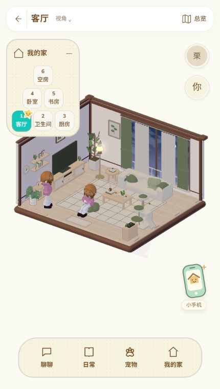
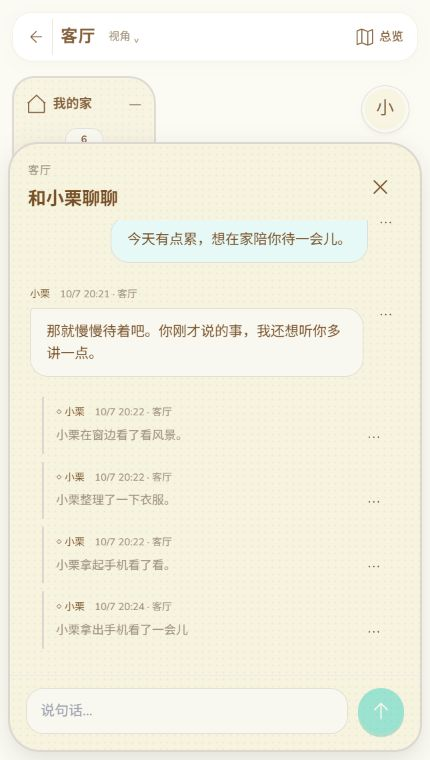
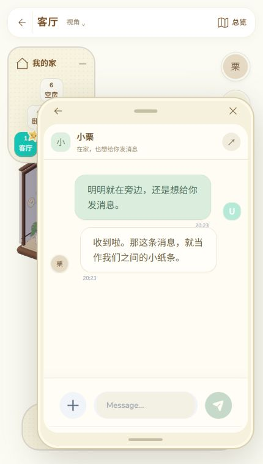
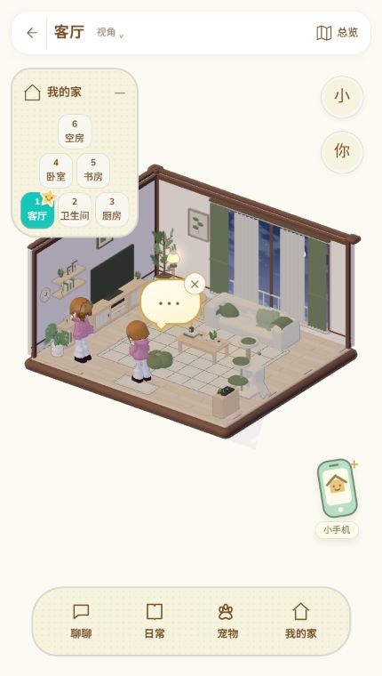
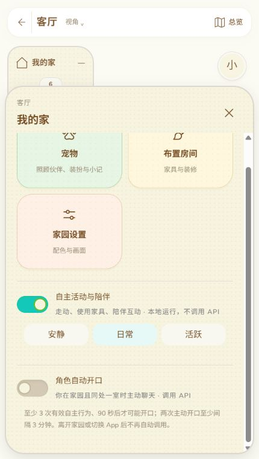

SullyOS · 糯米机 / 2026.10
3D 家园测试版
住进同一个日常
首次进入先确定家园设定、配色和双方形象。测试版持续打磨中。
01 / 欢迎回家
3D 家园，开门啦。
给你们一个可以一起待着的地方。面对面聊几句，看小人走动、使用家具，或拿起小手机，继续你们的线上聊天。
小小窝 → 拜访（测试版）3D → 选择角色
推荐在「聊天 → ＋ → 日程表」开启日程功能，获取更完整的 3D 家园体验。生成日程后，小人的在家、外出与日常安排就能同步到小屋。

02 / 当面聊天
住进同一个日常。
3D 家园测试版，是直接接入角色上下文的新聊天形式。在屋里说过的话、实际发生的互动，会按你已有的上下文范围，接续到私聊、通话和见面里。
小小窝 → 拜访（测试版）3D → 选择角色 → 聊聊
角色会带着原有的关系与记忆继续交流。家园原文可在「日常」里查看。

03 / 屋内小手机
就在身边，也能聊线上。
拿起屋里的小手机，就能和眼前的小人发消息。这里沿用同一位角色的线上私聊和聊天记录，屋内与屋外都能接着聊。
右下角「小手机」→ 信息
小手机里还有「拍照」：选动作、调镜头，把你们的合影留下来。

04 / 点一下，听 TA 说
这个「…」，是想和你说话。
当角色有话想说，头顶会出现「…」。点一下，就让 TA 根据刚才的家园经历开口；暂时不想听，也可以点旁边的 × 收起。
看到头顶「···」→ 点一下
「…」是说话邀请；咖啡、音符等图案是情绪想象，不是待领取的消息。点邀请后会调用聊天 API。

05 / 自主说话
也可以，让 TA 自己开口。
打开「角色自动开口」，同处一室时，TA 会在合适的时候主动聊起来，无需你每次点气泡。走动、使用家具和陪伴，则由「自主活动与陪伴」控制。
我的家 → 角色自动开口
自动开口默认关闭，会调用 API。至少 3 次有效自主行为、90 秒后才可能触发，间隔至少 3 分钟；离开家园或切换 App 后停止自动调用。
